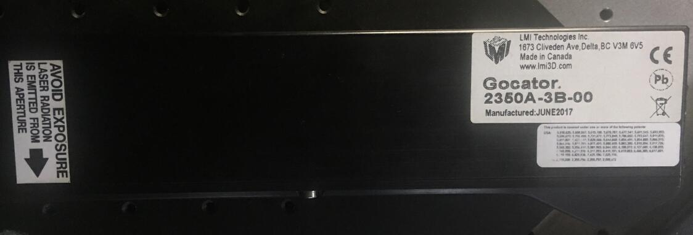
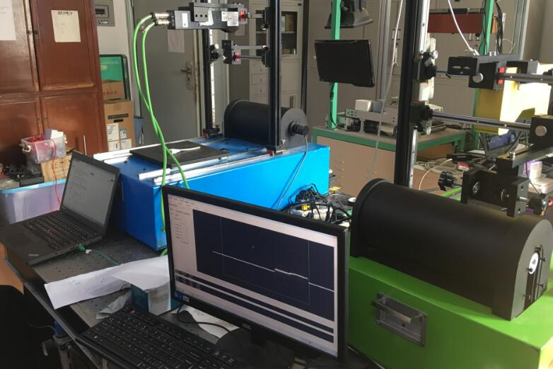
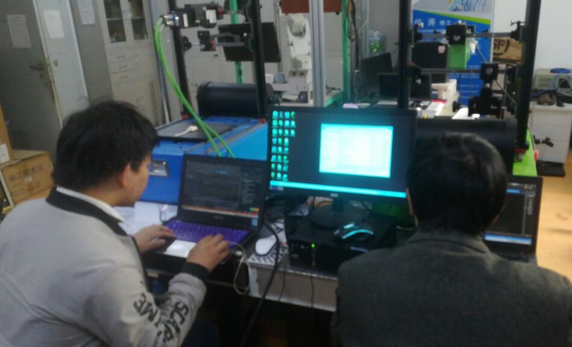
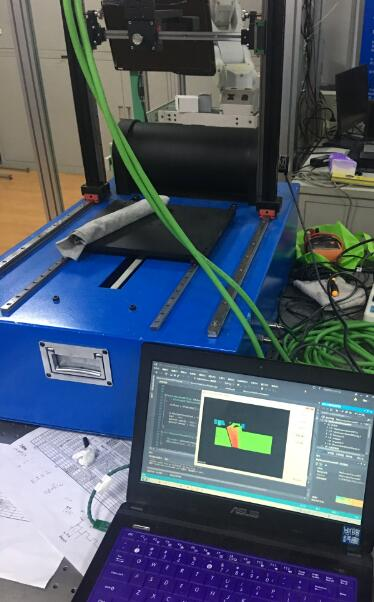
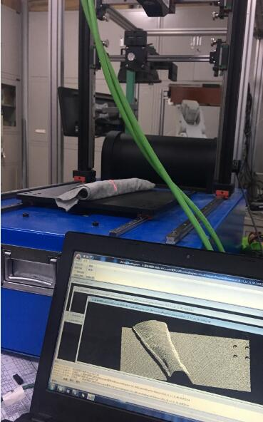
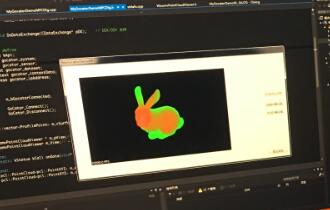

前言
实验室有个Gocator-2350A-3B-00老师让用起来

入门
1、官网查型号，找说明书和开发手册
公司官网LMI TECHNOLOGIES
详细信息：产品->三维双目快照式传感器->Gocator 2300
产品资料下载：支持->产品资料下载->Gocator 2300
喜欢说明文档做得好的公司
应用指南中有各种开发文档，有支持HALCON的，有支持Hexsight的等等
我这里有个APPNOTE_Gocator_4.x_5.x_Multi_Sensor_Guide（同学下的，具体在什么位置我就没研究了）我觉得这个资料还不错，虽然是介绍多个传感器的，还是很值得一看的，里面还有些例程。
错了应该首先查看对应的SDK版本号，下载对应的SDK包和对应的例程，这一点后来才意识到。（参见其他说明中Gocator问题）
说明文档中指出：
1、怎么手动设置，怎么接收数据（不要求多个传感器之间的匹配）—>4.1参看GoMultiSensor_BasicSetup example
2、自动设置流程—>4.2参看GoMultiSensor_AutomaticSetup
3、设备初始化快速开始—>4.3.1参看GoMultiSensor_AutomaticSetup
4、多设备间数据序列和匹配逻辑—>4.4参看GoMultiSensor_AutomaticSetup
5、用GoSensor_Set多线程回调—>4.5.1参看GoMultiSensor_Multi-sensorthread
6、多线程回调—>4.5.1参看GoMultiSensor_Multi-sensorthread
7、多线程回调—>4.5.2参看GoMultiSensor_Multi-datathread
SDK开发文档在GO_SDK-doc->GoSdk->Gocator_2x00下
这是我们当前所做的工作，开发Gocator和研发我们自己的扫描设备

其他说明
之前我在搞Hexsight的时候，win10和Hexsight4.1之间的冲突问题时，实在不知道解决途径，就只好在LMI官网上提问，觉得LMI服务还不错,今天提问第二天就能得到回复，而且它会一步一指导你排查问题并且让你提交反馈。
So let us know if this helps.
Hexsight问题
1、win10与Hexsight4.1不兼容问题
这个问题也是困惑我很久，当时我为了追求新win系统新性能自己装了win10，而老师是用win7和Hexsight4.1。
会出现什么问题咧：win10 Hexsight4.3显示控件完全是黑色的，不能正常显示，只能出现标定图像。
can you try setting this registry key, using regedt32.exe:
[HKEY_CURRENT_USER\Software\LMI Technologies\HSDisplay]”DirectX Enabled”=dword:00000000
Then, to be on the safe side, reboot the PC, and try again.
这是我的My Support Tickets不知道你们能不能看到QUESTION PROPERTIES
当时走投无路，没人可问，困扰了我一两个星期没解决的问题，在官网上得到了快速的帮助，开心得不得了~
2、win10+VS2017+Hexsight4.4不兼容问题
如同”\x0003”VTS_BSTR未定义问题
this has been corrected for the next release of 5,but wrappers are already generated for prevoious versions
you just need to put a space before the VTS_BSTR,after the last doublequote
一些警告问题
预处理器添加 WINVER=_WIN32_WINNT_MAXVER
等等问题，有些我都不及得了。
这是我的My Support Tickets不知道你们能不能看到QUESTION PROPERTIES
Goactor问题
1、电脑网页连接不上
本地IP
检查线路，这次问题是Goactor的地线和编码器的地线接在一起了
2、二次开发程序连接不上Gocator
SDK版本库和Gocator固件库不一致
打开网页端可以查看到当前版本号4.5.4.120，在官网上下载对应的SDK包（14400-4.5.4.120_SOFTWARE_GO_SDK）和例程（14405-4.5.4.120_SOFTWARE_GO_Tools）
一些成果
- 那些和导师一起写代码开发的日子
 - MFC VTK PCL界面显示程序
 - 单文档显示界面，这个是老师写的O(∩_∩)O
 - 我们研发的产品
- 一只染色兔子

遇到的难题
待解决
1、MFCPCLVTK实时显示问题
记录：
已解决
1、编译符合PCL版本的VTK（好像我写了有篇编译VTK博文，想让师弟编译O(∩_∩)O哈哈~）不必说，编译PCL等等
2、Gocator连接问题，SDK问题，接线问题等等
3、error LNK2019: 无法解析的外部符号 _WinMain@16（VS2013） 好像说是项目建错了，重新建立项目，把程序拷贝过去，貌似解决
4、PCL1.8.0 error C2589: “(”: “::”右边的非法标记
也许在代码里有#defined max或者在pcl文件头之前定义了windows.h
解决方案一：
在你的#include<windows.h>之前使用#define NOMINMAX
或者在#include pcl头文件之前使用#undef max
解决方案二：
参见相关博客
解决方案三：
pcd_io.h中使用的std::numeric_limits
::max与windows定义的min,max宏冲突，暂时改成(std::numeric_limits ::max) () 的形式来避免
解决方案四：
#pragma push_macro(“min”)
#pragma push_macro(“max”)
#undef min
#undef max
#include “pcd_io.h”
#pragma pop_macro(“min”)
#pragma pop_macro(“max”)
或者是几种方案的综合